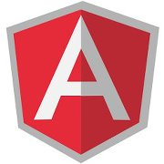

Angular
JS

Rich client-side interactivity without messy event handlers
MVVM pattern - object-oriented JS and declarative bindings
IE6+ FF2+ Chrome Safari Opera ...
MIT License
Declarative Data-binding
Data-binding programmatically
<input type="text" /> <h2></h2> <script> var input = $('input'); var updateLbl = function() { $('h2').text(input.val()); } $('input').on('change', updateLbl).val("Rouben"); updateLbl(); </script>
Basic binding
<div data-ng-app> <input type="text" data-ng-model="yourName" /> <h2 data-ng-bind="yourName"></h2> </div> <script src="../js/lib/angular.js"></script>
Explicit binding
<div id='main'> <input type="text" data-ng-model="yourName" /> <h2>{{yourName}}</h2> </div> <script src="../js/lib/angular.js"></script> <script> angular.bootstrap($('#main')); </script>
Controller
<div data-ng-app> <div data-ng-controller="MyCtrl"> <input type="text" data-ng-model="name" /> {{name}} </div> <script> function MyCtrl($scope) { $scope.name = "Joe"; }; </script> </div> <script src="../js/lib/angular.js"></script>
Add custom listeners
<div data-ng-app> <div data-ng-controller="MyCtrl"> <input type="text" data-ng-model="name" /> </div> <script> function MyCtrl($scope) { $scope.name = "Joe"; $scope.$watch('name', function(newValue, oldValue) { console.log("new value is: "+newValue); }); } </script> </div> <script src="../js/lib/angular.js"></script>
Binding collections
<div data-ng-app> <ul data-ng-controller="MyCtrl"> <li data-ng-repeat="lang in langs"> {{lang.text}} </li> </ul> </div> <script src="../js/lib/angular.js"></script> <script> function MyCtrl($scope) { $scope.langs = [{text: "Java"}, {text: "C#"}]; }; </script>
Load and Save data
<div data-ng-app> <div data-ng-controller="MyCtrl"> <form class="form-horizontal" data-ng-submit="save()"> <div class="control-group"> <label class="control-label" >First name</label> <div class="controls"> <input type="text" data-ng-model="value.firstName" placeholder="First name"> </div> </div> <div class="control-group"> <label class="control-label" >Last name</label> <div class="controls"> <input type="text" data-ng-model="value.lastName" placeholder="Last name"> </div> </div> <div class="control-group"> <div class="controls"> <button type="submit" class="btn btn-primary">Save</button> </div> </div> </form> <button data-ng-click="load()" class="btn btn">Load</button> </div> </div> <script src="../js/lib/angular.js"></script> <script> // ============================================ // SERVER - let's pretend this is server code :-) var serverDB = window.localStorage; var Server = { getData: function(cb) { var data = serverDB.getItem('angular_data'); window.setTimeout(function() { cb(data); }, 100); }, saveData: function(data, cb) { serverDB.setItem('angular_data', data); window.setTimeout(cb, 100); } }; // ============================================ // CLIENT - jquery ajax functions hacked to call our "Server" $.getJSON = function(addr, callback) { Server.getData(function(data) { callback(data && JSON.parse(data)); }); }; $.post = function(addr, data, callback) { Server.saveData(data, callback); }; function MyCtrl($scope) { $scope.load = function() { $.getJSON('/some/url/data', function(resp) { $scope.value = resp; $scope.$apply(); }); }; $scope.save = function() { $.post('/some/url/save', angular.toJson($scope.value), function() {}); }; } </script>
Binding lists
<div data-ng-app> <div data-ng-controller="Todos"> <h2>TODOS ( {{numDone()}} / {{todos.length}} )</h2> <ul> <li data-ng-repeat="todo in todos"> <input type="checkbox" data-ng-model="todo.done"> <span>{{todo.text}}</span> </li> </ul> <form data-ng-submit="add(newItem)"> <input type="text" data-ng-model="newItem.text" /><br> <button type='submit' class="btn btn-primary">Add</button> </form> </div> <script> function Todos($scope) { $scope.todos = [ {text:'learn angular', done:true}, {text:'build an angular app', done:false}]; $scope.numDone = function() { var count = 0; for(var i = 0; i < $scope.todos.length; i++) { if($scope.todos[i].done) count++; } return count; }; $scope.add = function(newItem) { $scope.todos.push({text:newItem.text, done:false}); newItem.text = ''; }; } </script> </div> <script src="../js/lib/angular.js"></script>
Binding lists + Validation
<div data-ng-app> <div data-ng-controller="Todos"> <h2>TODOS ( {{numDone()}} / {{todos.length}} )</h2> <ul> <li data-ng-repeat="todo in todos"> <input type="checkbox" data-ng-model="todo.done"> <span>{{todo.text}}</span> </li> </ul> <form name="myForm" data-ng-submit="add(newItem)"> <p> <input type="text" data-ng-model="newItem.text" data-ng-maxlength="15" data-ng-required="true" name="newItem" /> <span data-ng-show="myForm.newItem.$error.required"> Required field! </span> <span data-ng-show="myForm.newItem.$error.maxlength"> Too long, use fewer characters! </span> </p> <button type='submit' data-ng-disabled="myForm.$invalid" class="btn btn-primary">Add</button> </form> </div> <script> function Todos($scope) { $scope.todos = [ {text:'learn angular', done:true}, {text:'build an angular app', done:false}]; $scope.numDone = function() { var count = 0; for(var i = 0; i < $scope.todos.length; i++) { if($scope.todos[i].done) count++; } return count; }; $scope.add = function(newItem) { $scope.todos.push({text:newItem.text, done:false}); newItem.text = ''; }; } </script> </div> <script src="../js/lib/angular.js"></script>
Avoid global variables
<div id='main'> <div data-ng-controller="MyScope"> <input type="text" data-ng-model="name" /> {{name}} </div> </div> <script src="../js/lib/angular.js"></script> <script> (function() { var Demo = angular.module( "Demo", [] ); Demo.controller("MyScope", function($scope) { $scope.name = "Joe"; }); angular.bootstrap($('#main'), ["Demo"]); })(); </script>
Dependency Injection
Inject values
<div id='main'> <div data-ng-controller="MyScope"> <input type="text" data-ng-model="name" /> {{name}} </div> </div> <script src="../js/lib/angular.js"></script> <script> (function() { var Demo = angular.module( "Demo", [] ); Demo.value("myValue", 23); Demo.controller("MyScope", function($scope, myValue) { $scope.name = myValue; }); angular.bootstrap($('#main'), ["Demo"]); })(); </script>
Inject Factories (Services)
<div id='main'> <div data-ng-controller="MyScope"> <input type="text" data-ng-model="name" /> {{revName()}} </div> </div> <script src="../js/lib/angular.js"></script> <script> (function() { var Demo = angular.module( "Demo", [] ); Demo.value("myValue", 'World'); Demo.factory('myFactory', function() { return { reverse : function(name) { return name.split("").reverse().join(""); } } }); Demo.controller("MyScope", function($scope, myValue, myFactory) { $scope.name = myValue; $scope.revName = function() { return myFactory.reverse($scope.name); } }); angular.bootstrap($('#main'), ["Demo"]); })(); </script>
Directives
Directive Maps Demo
Based on the
maps directive
<div id="main" data-ng-controller="mapCtrl"> <div style="margin: 1em; padding: 1em; border: solid 1px gray; border-radius: 15px"> <h1>{{longitude}} / {{latitude}}</h1> <hr> <input type="text" ng-model="longitude"> <input type="text" ng-model="latitude"> <hr> <button ng-click="findCurLoc();" class="btn">Find current location</button> </div> <div data-google-map="" data-lat="latitude" data-lng="longitude" style="width: 100%; height: 500px"></div> </div> <script src="http://maps.google.com/maps/api/js?sensor=false"></script> <script src="../js/lib/angular.js"></script> <script> var myApp = angular.module( "myApp", [] ); // controller myApp.controller('mapCtrl', function function_name ($scope) { $scope.latitude = 42.35670; $scope.longitude = -71.05690; $scope.findCurLoc = function() { window.navigator.geolocation.getCurrentPosition(function(position) { $scope.latitude = position.coords.latitude; $scope.longitude = position.coords.longitude; $scope.$apply(); }); }; }); // directive myApp.directive('googleMap', function function_name () { return { scope: { lat: '=', lng: '=' }, link: function (scope, elem, attrs) { var mapOptions = { zoom : 8, disableDefaultUI : true, center : new google.maps.LatLng(scope.lat || 0, scope.lng || 0), mapTypeId : google.maps.MapTypeId.ROADMAP }; var map = new google.maps.Map(elem[0], mapOptions); // update model when map changes google.maps.event.addListener(map, 'center_changed', function() { var center = map.getCenter(); var lat = center.lat(); var lng = center.lng(); if (scope.lat != lat || scope.lng != lng) { //console.log('1: '+scope.lat + ' !== '+lat+", "+scope.lng+" !== "+lng); scope.lat = lat; scope.lng = lng; if(!scope.$$phase) scope.$apply(); } }); // update map when model changes scope.$watch('lng + lat', function () { var center = map.getCenter(); var lat = center.lat(); var lng = center.lng(); if (scope.lat !== lat || scope.lng !== lng) { map.setCenter(new google.maps.LatLng(scope.lat, scope.lng)); } }); } } }); angular.bootstrap(document.getElementById('main'), ["myApp"]); </script>
Directive Video Demo
Based on the
webcam directive
<p>This is going to be sweet!</p> <webcam></webcam> <script src="../js/lib/angular.js"></script> <script> (function() { // GetUserMedia is not yet supported by all browsers // Until then, we need to handle the vendor prefixes navigator.getMedia = ( navigator.getUserMedia || navigator.webkitGetUserMedia || navigator.mozGetUserMedia || navigator.msGetUserMedia); var Demo = angular.module( "Demo", [] ); Demo.directive('webcam', function () { return { template: '<div class="webcam">' + '<video class="webcam-live"></video>' + '</div>', restrict: 'EA', replace: true, link: function postLink($scope, element) { // called when camera stream is loaded var onSuccess = function onSuccess(stream) { // Firefox supports a src object if (navigator.mozGetUserMedia) { videoElem.mozSrcObject = stream; } else { var vendorURL = window.URL || window.webkitURL; videoElem.src = vendorURL.createObjectURL(stream); } /* Start playing the video to show the stream from the webcam*/ videoElem.play(); }; // called when any error happens var onFailure = function onFailure(err) { alert("uh oh :("); }; // Check the availability of getUserMedia across supported browsers if (!navigator.getMedia) { onFailure(); return; } var videoElem = element.find('video')[0]; navigator.getMedia ( { video: true, // ask only for video audio: false }, onSuccess, onFailure ); } }; }); angular.bootstrap($('body'), ["Demo"]); })(); </script>
Directive
<div id='main'> <div data-ng-controller="MyScope"> <div data-hello-world></div> <input type="text" data-ng-model="name" /> {{revName()}} </div> </div> <script src="../js/lib/angular.js"></script> <script> (function() { var Demo = angular.module( "Demo", [] ); Demo.value("myValue", 'World'); Demo.factory('myFactory', function() { return { reverse : function(name) { return name.split("").reverse().join(""); } } }); Demo.controller("MyScope", function($scope, myValue, myFactory) { $scope.name = myValue; $scope.revName = function() { return myFactory.reverse($scope.name); } }); Demo.directive("helloWorld", function ($rootScope) { return { template : '<fieldset><legend></legend><input type="text" ng-model="name"/></fieldset>', // templateUri // scope: false, // false | true | { } link : function (scope, elm, $attrs) { // scopes inherit from each other by default... // alert(scope.__proto__ === $rootScope); var update = function() { elm.find('legend').text(scope.name); }; scope.$watch('name', update); update(); } }; }); angular.bootstrap($('#main'), ["Demo"]); })(); </script>
Directive - with its own scope
<div id='main'> <div data-ng-controller="MyScope"> <div data-hello-world></div> <input type="text" data-ng-model="name" /> {{revName()}} </div> </div> <script src="../js/lib/angular.js"></script> <script> (function() { var Demo = angular.module( "Demo", [] ); Demo.value("myValue", 'World'); Demo.factory('myFactory', function() { return { reverse : function(name) { return name.split("").reverse().join(""); } } }); Demo.controller("MyScope", function($scope, myValue, myFactory) { $scope.name = myValue; $scope.revName = function() { return myFactory.reverse($scope.name); }; $scope.person = { firstName: 'Joe' }; }); Demo.directive("helloWorld", function () { return { template : '<fieldset><legend></legend><input type="text" ng-model="name"/> <input type="text" ng-model="person.firstName"/></fieldset>', // templateUri scope : false, // true | false | { ...specific params... } link : function (scope, elm, $attrs) { var update = function() { elm.find('legend').text(scope.name); }; scope.$watch('name', update); update(); } }; }); angular.bootstrap($('#main'), ["Demo"]); })(); </script>
Routing
Example - ../examples/angularjs/
Rouben Meschian
rmeschian@gmail.com